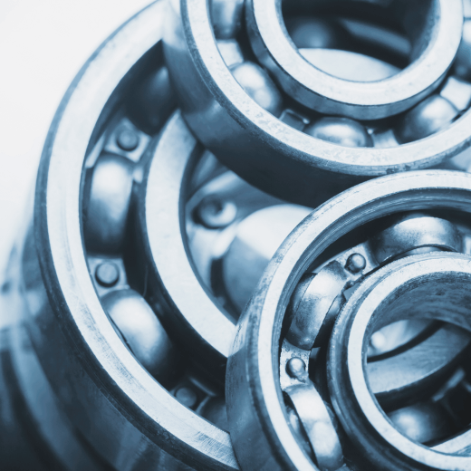
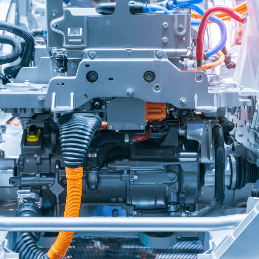
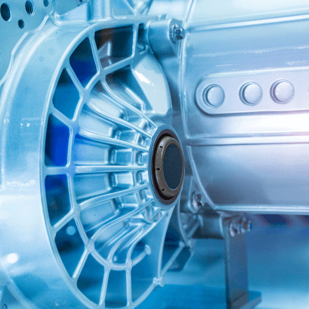

자동차 산업은 크게 완성차 조립과 부품 업종으로 나눌 수 있습니다. 완성차 조립 업종은 전 분야에 걸쳐 스마트팩토리 전환이 진행되고 있고, 부품 식별과 추적 관리를 통한 선제적 품질보증 및 고객 만족을 위한 감성 품질 실현을 추진하고 있습니다.
자동차 부품 업종은 완성품 제조사의 높은 품질 요구 수준을 달성하기 위한 시스템 기반의 품질관리와 적시 납기를 위한 스케줄 관리를 통해 경쟁력 강화에 힘쓰고 있습니다.
자동차 업종은 실시간 품질 이상 감지와 통제체계 확보를 위한 4M* 변경 정보 추적 관리와 4M 변경에 따른 품질 영향도 점검이 가능한 시스템을 요구하고 있으며, 설비 자동화 기반 제조 시스템 구축 및 제조 현장의 물류 작업 가시성 확보와 재고 관리 효율성 극대화를 위한 적기 납기가 가능한 체계가 필요합니다.
* 4M (Man, Machine, Materials, Method)
가치 제안
오토모티브 업종 특화 스마트팩토리 구축
표준 생산 체계와 ICT/자동화 기술을 활용한 시스템 기반의 공장 실현 및 LOT
추적/분석 체계의 구축으로 생산성 향상, 품질 경쟁력 확보, 실시간 제조 현황
모니터링이 가능한 고효율 공장을 통해 고객의 제조 환경을 스마트하게
바꿔드립니다.
프로세스와 시스템 기반의 업무
진행이 가능한 제조 현장의 Operation 혁신 실현
ERP 연계 기반 자재부터 제품까지 정물일치 실현 및 재고정보 가시화
(ERP 연동)
실시간 품질 이상 감지 및 통제체계 확보 (변경점, 불량, 부적합, 이상발생)
수기 작성 생산 문서 표준화를 통한 System 반영 (일상점검, Master E/P1),
초중종물 Check Sheet, 작업일보, Tool 교체 등)
Recipe 관리, 예방보전(TBM)2), 예지보전(CBM)3), 고장보전, Spare Parts 관리
실시간 설비 연계를 통한 설비 제어 및 자동 운전, 설비종합효율 (OEE) 및
생산성 관리 (UPH, UPPH, 효율, 능률 등)
시스템 기반의 통합 관제를 통한 공정 변동에 대한 대응력 강화
1)Master E/P : Master Error/Pass(검사기 양불 판별 기능 확인 절차)
2)TBM : Time base maintenance(예방보전)
3)CBM : Condition Based Maintenance(예지보전)
프로세스와 시스템 기반의 업무
진행이 가능한 제조 현장의 Operation 혁신 실현
ERP 연계 기반 자재부터 제품까지 정물일치 실현 및 재고정보 가시화
(ERP 연동)
실시간 품질 이상 감지 및 통제체계 확보 (변경점, 불량, 부적합, 이상발생)
수기 작성 생산 문서 표준화를 통한 System 반영 (일상점검, Master E/P1),
초중종물 Check Sheet, 작업일보, Tool 교체 등)
1)Master E/P : Master Error/Pass(검사기 양불 판별 기능 확인 절차)
2)TBM : Time base maintenance(예방보전)
3)CBM : Condition Based Maintenance(예지보전)
Recipe 관리, 예방보전(TBM)2), 예지보전(CBM)3), 고장보전, Spare Parts 관리
실시간 설비 연계를 통한 설비 제어 및 자동 운전, 설비종합효율 (OEE) 및
생산성 관리 (UPH, UPPH, 효율, 능률 등)
시스템 기반의 통합 관제를 통한 공정 변동에 대한 대응력 강화
구축 사례

휠 베이링 제조 선두 기업인 고객사는 Global MES 구축을 통해 분산된 정보를 통합하여 글로벌 성장 기반을 갖추게 되었습니다. 생산 일보 등 수작업 리포트를 MES를 통해 자동 생성하여 작업 공수와 데이터 오류를 감소시켰으며 설비 데이터 수집 및 분석을 통해 제조 효율을 증대하였습니다. 궁극적으로 전산과 실물 정보를 일치시켜 정확한 의사결정 체계를 확립하게 되었습니다.
#MES#QMS
자율주행 모빌리티 선도 기업인 고객사는 시장의 변화 요구에 따라 고객사만의 독자적인 제조실행 시스템을 구축할 필요가 있었습니다.
고객사는 공정 장비 업체 에서 제공한 외산 MES를 사용하고 있었으나 생산 현장 변화에 즉시 대응이 어려워 확장이 용이한 미라콤 MES 시스템을 도입하였습니다. 이를 통해 효율적인 제조 실행 체계와 생산관리 역량 강화를 위해 프로세스를 표준화하였이고, 자재부터 출하까지 이력 추적 체계를 만들었습니다. 특히 메탈마스크, 피더 등 수명관리가 필요한 부자재 사용 관리 기능을 도입하여 부자재와 소요량을 실시간으로 관리할 수 있게 되었습니다. 이를 통해 고객사는 글로벌 스마트팩토리의 초석을 마련할 수 있었습니다.
#SPC#MES#ERP

고객사는 경영목표 달성을 위한 해외 거점별 신공장을 건설하던 중 동일 프로세스의 상이한 시스템 구축으로 인해 업무와 시스템 표준화가 미흡하고, 투자 비용이 과다하게 요구되는 문제가 있었습니다. 고객사의 이러한 문제를 해결하고자 데이터, 프로세스, 인터페이스, UX 및 소스코드의 표준화를 정립하여 글로벌 Operation과 Governanace를 확보할 수 있는 체계를 만들었습니다. 기 구축된 중국 법인의 생산/물류 시스템을 기준으로, 멕시코 법인 및 중국 신규 법인에 대한 표준/특화 프로세스를 순차적으로 통합 구현하였이고, 제한된 인력으로 최적의 글로벌 운영 체계를 수립하여 효율적으로 관리하고 있습니다.
#MES

글로벌 자동차 부품 기업인 고객사는 완성차와 부품 정보의 연계 및 부품 Lot 정보와 품질 정보의 연계가 요구되었습니다. 이러한 요구를 충족하기 위해 자동차 부품 산업에 최적화된 MES를 구축하여 공정 진행 관리를 효율화 하였습니다. 바코드를 활용하여 실시간 자재 수불 관리 체계를 만들었고, 부품식별표에 기반한 납품&품질 검수 관리 기능을 개발하였습니다. 이를 통해 고객사의 품질관리 요구를 충족하였고, 재고관리 가시화 및 공정진행관리 효율화를 통해 고객 요구에 따른 적기 납품 체계를 확보할 수 있었습니다.